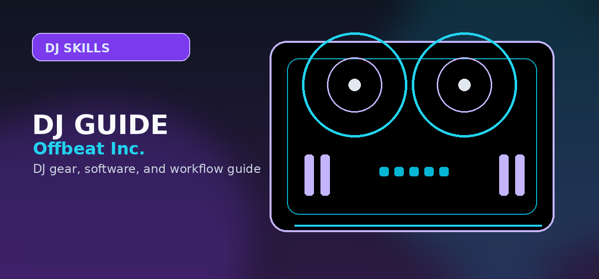

Uploading DJ Mixes to YouTube: Rights and Content ID
Step-by-step guide to uploading DJ mixes on YouTube — copyright, Content ID, monetization options, and the tools that actually work.

Disclosure: This page uses affiliate links. We may earn a commission at no extra cost to you. Full disclosure →
DJ mixes containing third-party recordings may receive Content ID claims, country blocks or removal requests. No upload setting or editing trick guarantees that copyrighted music will stay available.
Why YouTube Blocks DJ Mixes
Content ID can identify copyrighted music and apply a rightsholder's policy to track, monetize or block a video, including by country. A Content ID claim is not itself a strike. A valid copyright removal request can remove a video and give its channel a strike. YouTube's official explanation.
Option 1: Use Label-Licensed Sets via DJ Tools
Use original music you own or third-party tracks with express permission for the intended online video. A DJ pool, streaming plan or music download does not, by itself, license public mix uploads. Check rights to the recording and composition, eligible platform and monetization before publishing.
Option 2: Accept Claims and Keep the Video Live
A music rightsholder may monetize, track or block a claimed video, sometimes by territory. These policies can change. A Content ID claim does not make a mix licensed or prevent a later removal request. Check YouTube Studio, and dispute only if you have a legitimate rights basis.
Option 3: Stems and Bootleg Remixes
Use your own recordings or properly licensed samples. Remixing, pitch-shifting, creating bootlegs or isolating Stems from copyrighted tracks does not automatically authorize posting them to YouTube or make them immune to Content ID.
Option 4: Use Epidemic Sound or Artlist
Some music libraries license background music for online videos, but the actual terms matter. A creator-video subscription is not automatically permission to redistribute entire tracks inside a DJ mix. Check each plan's rights, catalog, channel and monetization limits.
Prerequisites and Foundational Knowledge
Start with a mix you have recorded using eligible music sources, a tracklist, and a video or image that you have rights to publish. Check each track's recording and composition rights: purchasing audio or having a streaming subscription does not itself grant YouTube sync permission. If your recording workflow is unfinished, use our DJ recording guide first.
Common Mistakes People Make (And How to Avoid Them)
Common problems include assuming a music download/streaming subscription grants public video rights, treating a Content ID claim as permission, forgetting to inspect territorial blocks in YouTube Studio, and assuming that pitch changes or Stems remove copyright. Check license terms for every track and visual, and keep an original copy of the exported mix so you can make an authorized revision if necessary.
Tools and Resources You'll Need
Gather these resources before starting: a set of tracks with a documented source (label-licensed through your DJ tool, direct label clearance, or a licensing-compatible library like the ones above), a free audio editor such as Audacity for final loudness and dead-air checks, and YouTube Studio for uploading, adding timestamps, and responding to any claims. Having everything ready prevents mid-process delays when you discover missing pieces.
Advanced Optimization and Pro Tips
Add an accurate tracklist and timestamps for listener navigation. Export the final video and listen through its first and last minute before uploading. Use original artwork/branding, inspect the claim results in YouTube Studio and only share the URL when availability is confirmed for your intended audience.
Troubleshooting and When to Seek Help
For a Content ID claim, check the owner and current policy in YouTube Studio. For a regional block or takedown, check your actual rights and use YouTube's official removal-request guidance; do not file unsupported counter-notifications. For an audio/video export fault, verify the original recording, levels and rendered file before re-uploading.
Bottom line: Publish only material you are authorized to use on the chosen platform. Mixcloud has separate licensed-show eligibility rules; using a service or a Content ID claim never guarantees permanent upload availability.
⚡ Check current prices and deals:
YouTube DJ Mix Options Compared
| Approach | What must be checked | Important limit |
|---|---|---|
| Original music | You own the recording, composition and included samples | Confirm collaborators and licensed elements |
| Third-party tracks | Express rights to include in online video | Territory, platform and monetization can vary |
| Claimed YouTube upload | Actual rightsholder policy in Studio | Claims are not permission or takedown protection |
| Mixcloud long-form show | More than 15 minutes and Featured Artist Rules | Shows can still be restricted |
| Unlisted/private YouTube | Same content rights as public uploads | Content ID/takedowns still apply |
YouTube DJ Mix Upload Guide: Everything You Need to Know
Uploading DJ mixes to YouTube involves navigating music licensing, video production, and channel optimisation simultaneously. This guide covers each component in the order most useful for someone who is new to publishing DJ content online.
Copyright and Licensing: The Real Situation in 2026
A Content ID claim may allow monitoring, monetization or blocking, depending on the rightsholder and territory. A copyright removal request is a different action: if valid it removes the video and issues a strike. Three active copyright strikes within 90 days can lead to channel termination. A claimed video is not automatically licensed, and there is no universal guarantee that an uploaded DJ mix will stay available. Official YouTube guidance.
Strategies to Reduce Copyright Issues
- Keep written permissions for third-party recordings, compositions and images used in online video.
- Review actual claims and region restrictions in YouTube Studio before sharing the upload.
- For alternative hosting, review Mixcloud's Featured Artist Rules: eligible shows are over 15 minutes, and uploads can still be restricted.
- Do not change tempo, pitch or Stems to evade copyright detection; editing does not create usage rights.
Video Production Workflow
| Step | Tool | Notes |
|---|---|---|
| Record the mix | Audacity, Adobe Audition, or built-in software recording | WAV 24-bit/44.1kHz is the highest quality; MP3 320kbps is acceptable |
| Edit and clean up | Audacity (free) | Remove dead air at start/end; normalise to -1 dBFS peak |
| Create the video overlay | Canva, DaVinci Resolve (free), or a static image | A static thumbnail with tracklist is perfectly acceptable; video editing is optional |
| Export the final video | DaVinci Resolve or Handbrake | H.264 1920×1080 at 8 Mbps; YouTube re-encodes anyway so quality matters less above 5 Mbps |
| Upload and optimise | YouTube Studio | Write the full tracklist in the description with timestamps; this improves suggestions and search appearance |
Optimising Your Mix for YouTube Discovery
- Include full tracklist in description — both for audience usability and for improved YouTube search relevance
- Add timestamps — viewers can jump to specific tracks they want to hear; this significantly improves watch time metrics
- Use genre keywords in the title — titles like "House Mix 2026 — 60 Min" consistently outperform abstract titles for search discovery
- Create a custom thumbnail — a clean, readable thumbnail with the genre and approximate BPM range outperforms the auto-generated preview
- Upload consistently — YouTube recommends channels that publish regularly; one mix per month is more effective for growth than 10 mixes then nothing
- Engage in comments — respond to tracklist requests and questions; this signals engagement to YouTube's algorithm
Expert Tips and Key Considerations
Before making your final decision, review these expert-level considerations from experienced DJs and producers in the community:
- Audio normalisation for YouTube — YouTube applies loudness normalisation to all uploaded content; masters with excessive limiting will sound worse after normalisation than well-balanced masters — aim for −14 LUFS integrated loudness
- Bitrate recommendations for DJ mix uploads — Upload the highest quality file you can produce — YouTube re-encodes everything anyway, but starting from a higher quality source preserves more detail; use 320kbps MP3 minimum, WAV/FLAC if possible
- Thumbnail design best practices — A high-contrast thumbnail with the genre name, BPM range (if applicable), and duration is more informative than an abstract DJ photo; information-dense thumbnails outperform aesthetic-only thumbnails for discoverability
- Chapter markers increase viewer retention — Adding timestamp chapters (00:00 - Intro, 05:30 - Tech House Set, etc.) keeps viewers watching longer and makes the video more useful as a background mix for repeat visits
- The description box SEO value — YouTube's algorithm reads your full description; include the full tracklist, gear used, genre tags, and 2-3 relevant keywords naturally in the first 200 characters (above the fold)
- Shorts and preview clips drive subscription growth — A 15-60 second highlight clip from your mix uploaded as a YouTube Short reaches a broader audience and drives full-mix discovery
- Playlist curation increases playlist-add rate — Organise your mixes into playlists by genre and BPM; viewers who enjoy one mix will autoplay the next, increasing overall watch time and channel growth
- Community posts for upcoming mix announcements — YouTube's Community posts feature allows you to announce upcoming mixes and build anticipation before upload — channels that use Community posts grow faster than those that only upload videos
- Subscribe call-to-action timing — Studies of creator analytics consistently show that calls to subscribe are most effective when placed 60-90 seconds into a video, after the viewer has already confirmed they enjoy the content
- Responding to track ID requests in comments — Track ID comments are the single highest-engagement comment category on DJ mix videos; responding promptly to track ID requests is the most efficient strategy for building an engaged comment community
Essential Hardware for High-Quality Mix Recording
To ensure your DJ mixes sound professional and clear when uploaded to YouTube, your signal chain is just as important as your track selection. Avoid recording directly through your laptop's built-in microphone; instead, use a dedicated audio interface to capture the clean output from your mixer or controller.
Recommended Recording Gear
Capture studio-grade audio from your DJ setup with these reliable interfaces:
- Focusrite Scarlett 2i2 (4th Gen): The industry standard for capturing clean, high-fidelity audio from your master output. Search Focusrite Scarlett 2i2 (4th Gen) on Amazon →
- Audient iD4 MKII: Excellent pre-amps if you are recording external turntables or analog mixers. Search Audient iD4 MKII on Amazon →
Pro-Grade Controllers for Seamless Transitions
Smooth transitions are essential for keeping viewers engaged throughout your YouTube set. If your current controller is limiting your creative flow, upgrading to a unit with better jog wheels and dedicated FX controls can significantly improve your mix quality.
Top Pick for YouTube Creators
Pioneer DJ DDJ-FLX4: This is the ultimate choice for YouTube DJs. It integrates perfectly with Rekordbox and Serato, features built-in USB audio output for clean recording, and is highly portable for filming different studio setups. Check Current Price on Amazon
Buying advice and compatibility checks
Use this section to sanity-check the DJ mixes for YouTube against your actual setup before comparing prices.
Best fit
DJs who want to record, film, upload, and manage copyright risk around long-form mixes.
Skip if
Anyone expecting YouTube uploads to be copyright-safe just because the mix is noncommercial.
Compatibility checks
Check audio-interface routing, OBS settings, camera capture, file format, and YouTube copyright restrictions before recording.
2026 update
Short-form clips and livestream workflows are stronger, but long DJ mixes still face automated claims and regional blocks.
Price caveat
Budget for a clean audio interface and storage before buying lighting or camera upgrades.
Recommendation logic
Prioritize clean audio capture and copyright-aware publishing before visual polish.
| Buying check | What to verify | Why it matters |
|---|---|---|
| Setup fit | Inputs, outputs, operating system, software tier, and accessories | Prevents buying gear that looks right but fails in the actual rig. |
| Upgrade path | Whether the product still makes sense after six to twelve months | Reduces duplicate purchases and rushed upgrades. |
| Total cost | Required cables, cases, subscriptions, replacement parts, and backups | The lowest listing price is often not the true working setup cost. |
Official spec and support links
Check current specs, supported software, firmware, and accessory requirements at the source before buying.
Frequently Asked Questions
Will I get banned from YouTube for DJ mixes?
Content ID claims generally are not copyright strikes, but a valid removal request can take down a video and issue a strike. Three active copyright strikes within 90 days can lead to channel termination. Do not assume DJ mixes are immune from takedowns.
Can I monetize my DJ mix channel myself?
Only on tracks you either own or have licensed for monetization. Labels take the ad revenue on tracks they've registered. You can still monetize through channel memberships, Super Chats, and merch.